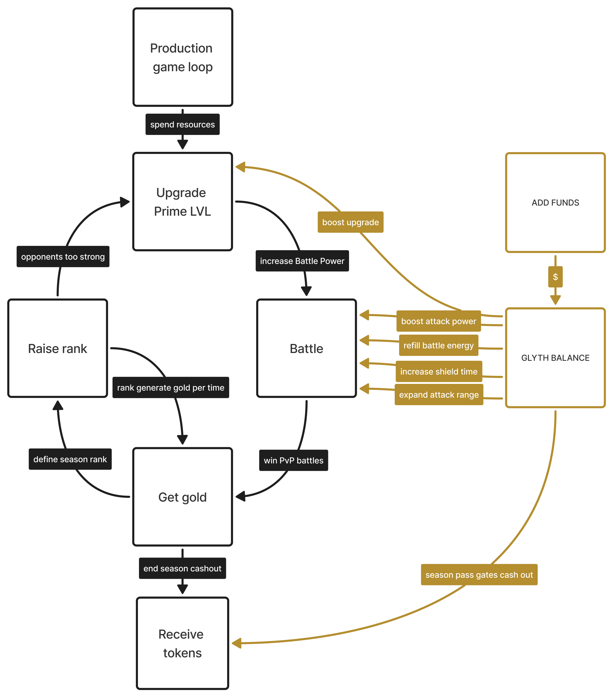
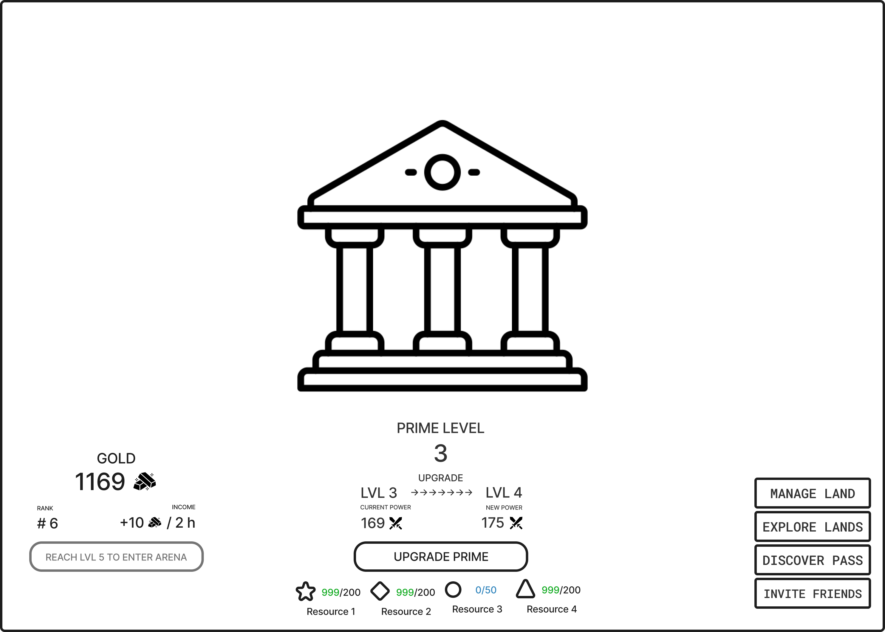
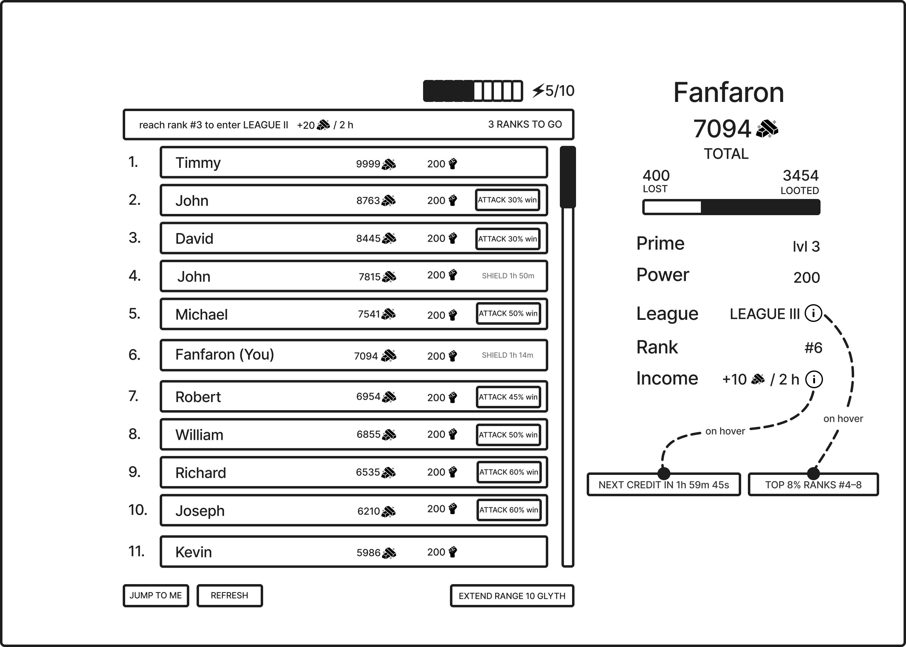
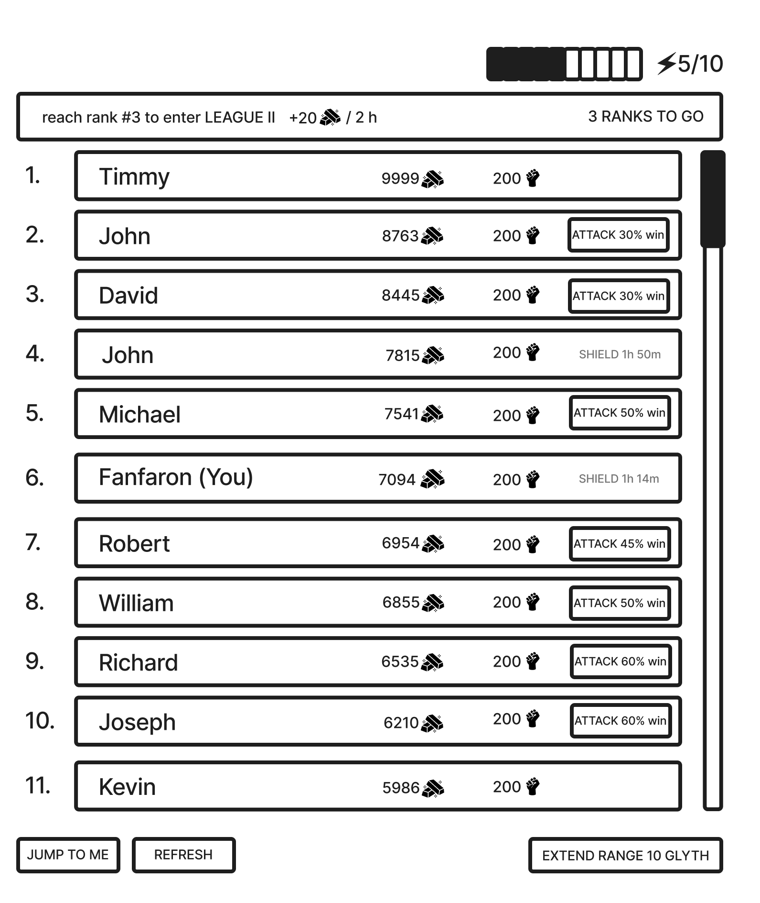
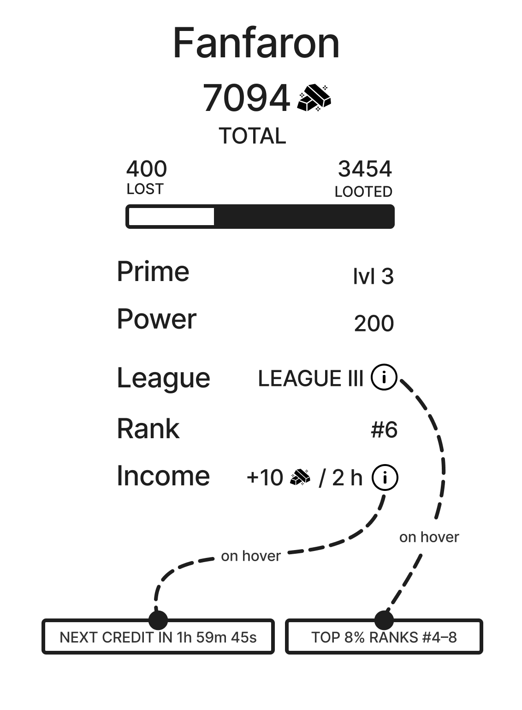
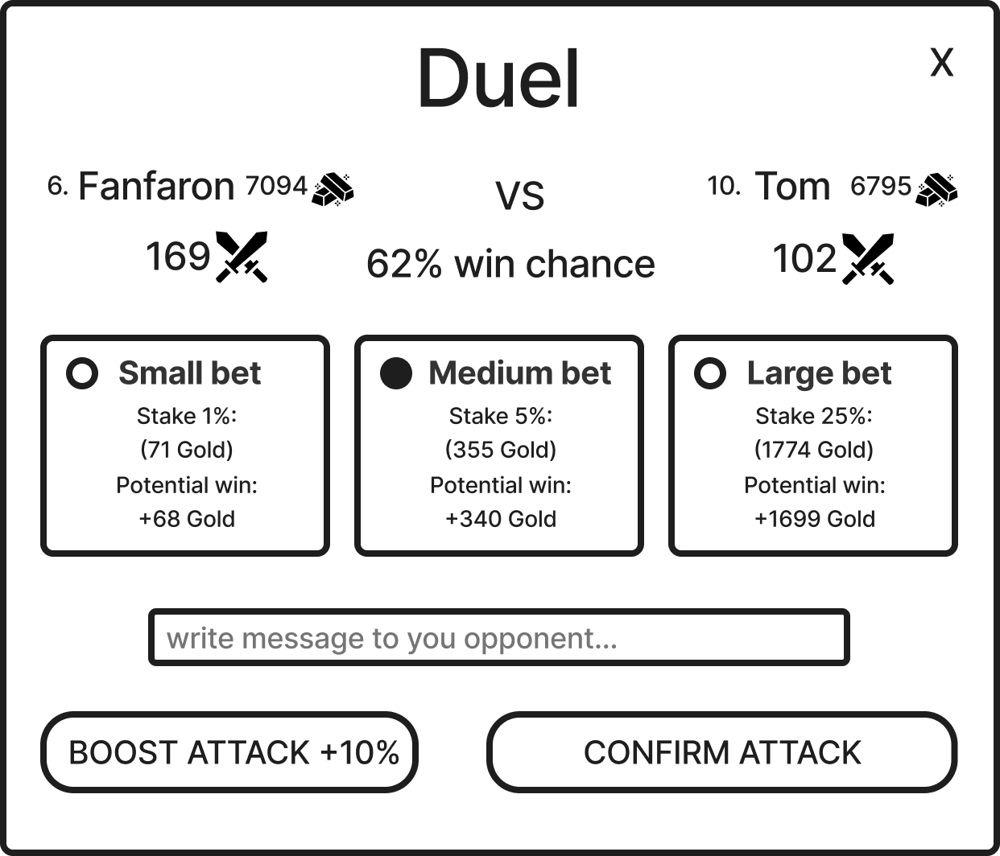
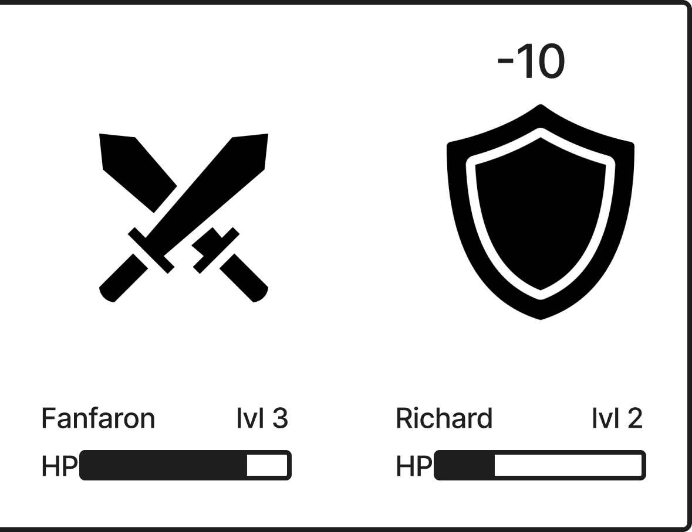
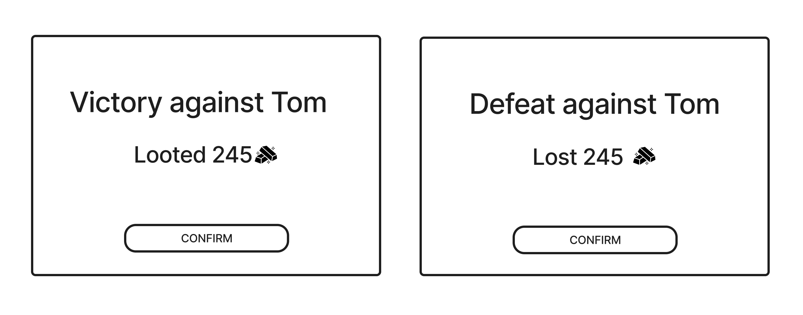

Arena
Overview

A season-scoped competitive mode where players battle for Gold, climb a leaderboard, and earn end-of-season token rewards.
Flow
- Play Lands to generate Resources.
- Spend Resources to upgrade Prime Level.
- Enter Arena and spend Battle Energy to attack eligible opponents.
- Win or lose Gold through Battles and see leaderboard rank change.
- Gain passive Gold Income from your current League over time.
- Upgrade Prime Level to increase Power for more combat strength.
- Reach season end and see final standings locked from the final leaderboard snapshot.
- Claim earned tokens manually after season end if you hold Season Pass.
Rules
- Arena is open to all players.
- Season Pass is required for Arena gameplay perks and token reward eligibility at season end.
- Arena uses Gold as its only score currency.
- Arena Battles transfer Gold only and must not transfer Resources.
- Prime Level is provided by Prime forging.
- Season duration is 5 days.
- Season start and end time is shared for all players.
- Final standings are computed from a single snapshot taken at season end.
- Players must claim tokens manually after season end.
Prime

A progression system that converts Resources into Prime Level and derived Power for Arena combat strength.
Flow
- Open Prime and view your current Prime Level.
- Spend Resources to upgrade Prime Level.
- See your derived Power update after the upgrade.
- Open Arena and use the increased Power in Battles.
Rules
- Prime Level is the primary progression shown in Arena and on the Leaderboard.
- Battle uses a derived Power value computed from Prime Level.
- Power is displayed as a derived value and is not upgraded directly in Arena.
- Arena access requires a minimum Prime Level of
default: 5; tunable. - If the player is below the minimum Prime Level, Arena is locked and the UI shows the required level.
Prime power
When calculating Prime power, the following features of Prime upgrades are taken into account:
- Energy spent on obtaining resources for level N;
- Time spent on obtaining Prime level N;
- Probability of upgrading Prime to level N;
var energy_spent; //how much energy is spent on gathering resources
var energy_spent_coef; //rounding coefficient
var time_spent; //how much time was spent upgrading the Prime
var time_spent_coef; //rounding coefficient
var attempts; //average number of attempts needed to increase the Prime by "N" level
var prime_power_coef; //rounding coefficient
var factor; //The number to whose multiples value will be rounded, depends of prime level
var prime_power = (energy_spent * energy_spent_coef) * (time_spent * time_spent_coef) * attempts * prime_power_coef;
return ceiling (prime_power, factor);
Gold
Gold is a season-scoped score currency that determines leaderboard rank and end-of-season token reward amount.
Flow
- View your current Gold total and rank.
- Gain Gold passively from Gold Income over time.
- Win or lose Gold from Battle outcomes.
- Track rank changes as your Gold changes.
Rules
- Gold is displayed as an integer value.
- Gold must not drop below
0. - Gold is not transferable outside Arena.
- Gold is gained from Gold Income.
- Gold is transferred by Battle outcomes.
- A player may have
0 Gold. - A player with
0 Goldremains on the Leaderboard. - A player with
0 Goldcontinues to receive Gold Income.
Passive Gold Income
An Arena-only Gold source that grants periodic Gold based on the player's League for passive rank progression.
Flow
- Open Arena and see your current League and Gold Income rate.
- Wait for Gold to accrue automatically over time.
- Receive credited Gold at the scheduled cadence.
- See your Gold Income rate change when your League changes.
Rules
- Gold Income is based on leaderboard position at the moment crediting is computed.
- Gold Income is credited at a regular cadence of
default: every 2 hours; tunable. - The UI shows the player's League number and Gold Income rate.
- Gold Income must not scale with Season Pass.
- Leagues are computed from the percentage of active players at credit time.
-
League thresholds and Gold Income values use the following defaults:
League Active players Income 1 Top 1% +40 Gold / 2h 2 Top 3% +25 Gold / 2h 3 Top 8% +16 Gold / 2h 4 Top 18% +10 Gold / 2h 5 Top 35% +6 Gold / 2h 6 Top 55% +4 Gold / 2h 7 Top 78% +3 Gold / 2h 8 Remaining players +2 Gold / 2h
Arena screen

A battle screen that lets players spend Battle Energy to attack nearby ranks for Gold transfer and leaderboard movement.
Flow
- Open the Arena screen after reaching the minimum Prime Level.
- See the Leaderboard, player stats panel, Battle Energy, and league promotion goal.
- Browse opponents and start Battles.
- Track Gold, rank, and League changes between Battles.
Rules
- The Arena screen requires the minimum Prime Level to access.
- On first entry, the Arena screen shows the onboarding sequence before the standard view.
Leaderboard

A ranked listing that orders Arena players by Gold for target discovery, Gold Income assignment, and season placement.
Flow
- Open the Leaderboard and see your rank, Gold, and a player-centered action window around your current position.
- Press
Refreshto load a new leaderboard refresh snapshot. - Browse nearby ranks and review opponents' Prime Level and win chance.
- Click Attack on an eligible opponent within attack range to open the Attack Setup window.
Rules
- Leaderboard entries are sorted by Gold in descending order.
- Leaderboard position determines Gold Income.
- Each entry shows rank, player identifier, Gold, Prime Level, and win chance.
- Win chance is computed as
attackerPower / (attackerPower + defenderPower). - Windowed scrolling: the Leaderboard shows a slice of entries centered on the player's rank. Scrolling up or down loads more entries on demand.
- League promotion goal: a strip above the Leaderboard showing the next League, its Income rate, and ranks remaining. Not shown when the player is in League 1.
- Attack range: the rank distance from the player's current rank that determines which opponents are targetable. Default is
default: +/-5 ranks; tunable. - Attack Range Expansion: a time-limited monetization buff. While active, increases attack range by an additional
default: +/-5 ranks; tunable. Affects only the buyer. - Attack validation: on Attack click, Arena checks that the season is active, the target is within attack range, the target is not shielded, and the player has Battle Energy.
- If validation fails, no Battle Energy is spent and the blocking reason appears inline.
- A player with
0 Goldor an opponent with0 Goldcannot start a Battle.
- Shield: applies to the defender only when the defender loses a Battle.
- Duration
default: 1 hour; tunable. - A defender with active Shield cannot be targeted.
- Leaderboard entries (including the player's own) show a shield icon and remaining time.
- Duration
- Shield Boost: a time-limited monetization buff that adds
default: +1 hour; tunableto the next Shield the buyer receives.- Expires unused if the buyer is not shielded while active.
- Refresh: the Leaderboard auto-refreshes on a regular interval while the Arena screen is open and immediately when the player closes a battle result.
- The player can also refresh manually.
Player stats

A side panel that displays the player's Arena identity, combat record, and passive income details.
Flow
- See Gold total, a proportional bar of Gold lost vs Gold looted, Prime Level, Power, League, Rank, and Gold Income rate.
- Hover League to see the percentile range and rank range for the current League.
- Hover Income to see the time remaining until the next Gold Income credit.
Rules
- Lost/looted bar: a proportional bar showing cumulative Gold lost on the left and cumulative Gold looted on the right, with numeric labels.
- League tooltip: hovering the League label shows the player's percentile range and rank range for the current League.
- Income tooltip: hovering the Income value shows the time remaining until the next Gold Income credit.
Battle energy
An Arena-only energy resource that limits how often the player can start Battles.
Flow
- Open Arena and see your current Battle Energy as
current/cap. - Wait for Battle Energy to regenerate.
- Start a Battle and spend 1 Battle Energy.
- Refill Battle Energy through monetization when you run out.
Rules
- Battle Energy is used only in Arena.
- Battle Energy cap is
default: 6; tunable. - Battle Energy regenerates by
default: +1 every 1 hour; tunableuntil it reaches the cap. - If Battle Energy is
0, the player cannot start a Battle and the UI shows the reason. - Blocked Battles must not consume Battle Energy.
- Battle Energy Refill restores Battle Energy up to the cap.
- Battle Energy Refill must not increase Battle Energy above the cap.
Battle
A combat encounter where the attacker selects a wager and confirms an attack, the outcome is resolved from Power-based win chance, and Gold is transferred from the loser to the winner through a pre-configured battle sequence.
Attack setup

A configuration screen for selecting wager, battle cry, and Attack Boost before confirming a Battle.
Flow
- See the opponent summary: name, rank, Gold, Power, and win chance.
- Select a wager tier and see the stake and potential win amounts.
- Optionally write a battle cry.
- Optionally activate Attack Boost.
- Click Confirm Attack.
Rules
-
Wager tier: the player selects one tier from
default: Small / Medium / DeGen; tunable. Defaults to the last-used tier, or Small on first battle.Tier Stake % Small 1% of attacker Gold Medium 5% of attacker Gold Large 10% of attacker Gold - Stake amount: floor(attackerGold × tier%). Potential win amount:floor(defenderGold × tier%).- On win, the attacker gains the potential win amount and the defender loses it. On loss, the attacker loses the stake and the defender gains it. - Attack message: shown in the opponent’s action log with the Battle outcome. Max length default: 80 characters; tunable. Defaults to empty.- Attack Boost: off by default each battle. Increases attacker Power by default: +10%; tunable. Consumed on Confirm Attack whether the player wins or loses.- On Confirm Attack, Arena re-validates eligibility and that the wager produces non-zero amounts. If re-validation fails, no Battle Energy is spent. If it passes, 1 Battle Energy is spent and the Battle Sequence starts.
Battle sequence

A presentation sequence that reveals a confirmed Battle outcome as a staged back-and-forth duel.
Flow
- A pre-configured battle script matching the confirmed outcome is selected.
- Both battlers appear with names, Prime Levels, HP bars, and sprites representing participants.
- The attacker sprite swings toward the defender.
- On hit: the screen shakes, the defender flashes white, a floating damage number spawns behind the defender sprite, floats upward, and fades away. The defender's HP bar drains after the hit visual.
- On miss: a floating "MISS" spawns behind the defender sprite, floats upward, and fades away. The defender tweens away.
- Battlers alternate turns across several exchanges, repeating steps 3–5.
- The killing blow lands with maximum screen shake. The loser's HP reaches 0 and the loser falls. The sequence transitions to Outcome.
Rules
- Pre-configured battle scripts: outcome is determined at confirmation. The sequence replays a pre-authored script that matches the outcome.
- Presentation only: the player makes no inputs during the sequence.
- Sprites: each battler is represented by a static sprite. All visual feedback comes from programmatic effects (tweens, shaking, flashing, hit pauses).
- HP bars: one per battler, always visible, starting at 100%.
- HP drain is delayed after the hit visual, not instant.
- Color thresholds: green above 50%, yellow between 20% and 50%, red below 20%.
- Screen shake: intensity scales with hit severity across three levels.
- Hitstop: heavy impacts freeze the frame before continuing.
- Flash: white overlay on major impacts.
Outcome

A result screen that shows the Gold change from the resolved Battle.
Flow
- See Gold transferred between battlers.
- See "Victory" or "Defeat" title with opponent name and Gold delta ("Looted" or "Lost" amount).
- Click Close to return to the Leaderboard.
Rules
- Gold changes are applied when the outcome is computed, not when the sequence ends.
- Gold transfer: after the killing blow, a band shows the Gold delta for both battlers before the outcome card appears.
- The Battle window remains open after the sequence ends until the player closes it.